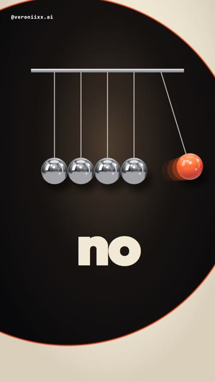
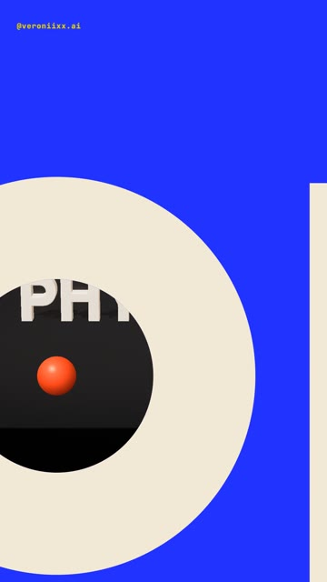
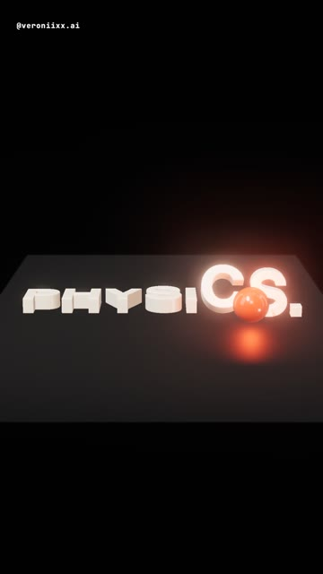
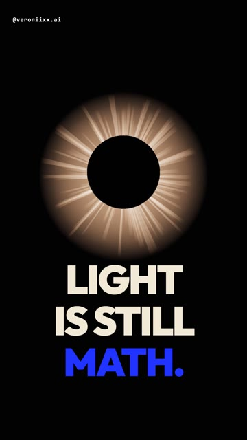
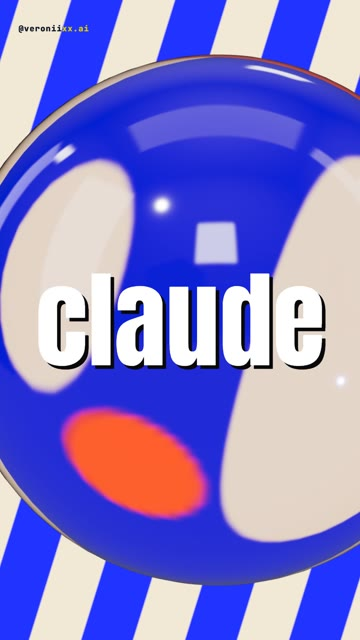

How I made a 19-second showreel where one red ball does every transition: a Newton’s cradle that flips the words, a dive through a letter, dominoes, a page flip, liquid, glass, an eclipse, 14 3D worlds behind one word. It never ends. No editing app, even the music is code. The full brief, ready to paste. Windows and Mac.





The sequel to my reel that hit 100K. Same red ball, same typography, all new transitions in real 3D: chrome, glass, liquid, light. Claude writes the typography, the 3D, the timing and the music. You write the words.
Every transition is a wave or a hole. On each click of the cradle the next page is clipped inside a growing circle that starts exactly at the contact point. For the dive, the blue page has a real hole cut in the “o”, and the next 3D scene is already rendered under it. The camera never cuts, it goes through.
Windows Press Win, type PowerShell, open it.
Mac Press Cmd + Space, type Terminal, open it.
Windows Paste one line at a time. Answer Y when asked.
winget install -e --id OpenJS.NodeJS.LTS winget install -e --id Git.Git winget install -e --id Python.Python.3.13 winget install -e --id Gyan.FFmpeg
Mac Homebrew first, it will ask for your password. At the end it prints two lines under “Next steps”: run them, then run the second command.
/bin/bash -c "$(curl -fsSL https://raw.githubusercontent.com/Homebrew/install/HEAD/install.sh)"
brew install node git python ffmpeg
npm install -g @anthropic-ai/claude-code
Prefer an app to a terminal? Install Claude from claude.ai/download, it has a Code tab that does the same thing.
mkdir ball-reel\ncd ball-reel\nclaude
Set up a motion project in this folder. 1. Install Remotion (React 18 + TypeScript) with @remotion/three, three and @react-three/fiber. 2. Check that Python has numpy and scipy. Install what is missing. 3. Check that ffmpeg works from the terminal. 4. Build a test composition, 1080x1920, 60 fps: a word in a heavy font on a cream background, and on top of it a transparent three.js canvas with one glossy red ball and one chrome ball, lit by an environment map. Render one frame to PNG with the GL backend set to "angle" and show me the path. If something is missing, install it yourself and tell me what you installed. If something fails, find the cause and fix it.
Words in square brackets are mine: put your own. The word for the dive needs an “o” (or any letter with a hole).
Build a vertical kinetic typography showreel in Remotion, with three.js for every 3D object. 1080x1920, 60 fps, 19.2 seconds, a seamless loop with no ending. All text in English. Keep text out of the top 220 px and the bottom 380 px (the Instagram interface). THE HERO One small glossy red ball. It goes through the whole reel and every transition happens through it. Palette: black #09090B, cream #F1E8D6, red #FF4A17, electric blue #2133FF, plus real chrome and real glass. Font: Outfit 900 for words, Anton for the big word in the drop. THE RULE No cuts that come from nowhere. Every scene must turn into the next one through the ball or through the object on screen. If a transition can only be a cut, it lands on a hard beat with a short flash. THE TIMELINE (150 BPM: one beat = 12 frames at 30 fps; work in 30 fps units and render at 60 fps) 1. NEWTON'S CRADLE (0-2.8 s). Five balls on strings under a chrome bar, the right one is the red ball. Every click of the cradle is a beat. On every click a circular wave spreads from the contact point; inside the circle the background flips (cream / black) and the next word is already there: [no / camera. / no / blender. / just / words.]. A thin red ring rides the edge of the wave. The swinging ball leaves a short ghost trail. A warm lamp glow behind the cradle, darker corners. 2. LAUNCH (2.8-3.3 s). The last click is too hard: the red ball tears off its string and flies up. The cradle slides out of frame upward. A blue wave opens [opus 5.5], where the "o" is a ring. 3. DIVE (3.3-4.2 s). The ball falls exactly into the hole of the "o". The camera dives after it. Through the hole you already see the next 3D scene, alive, so the dive lands inside it. 4. PHYSICS (4.2-6.8 s). 3D letters [PHYSICS.] stand on a dark floor under a warm spotlight. The ball drops in, rolls along the word and knocks the letters over one by one like dominoes, with a small bounce. A red light moves with the ball and tints the letters. The camera rises until it looks straight down and the fallen letters read [PHYSICS.] on the floor. 5. PAGE FLIP (6.8-7.4 s). The floor is a sheet of paper: it flips over on a hinge at its left edge, with the letters on it. Under it there is milky liquid. 6. LIQUID (7.4-9.0 s). The ball falls into the liquid with rings that spread over the word [LIQUID.] printed on the surface, so the letters wobble with the waves. The camera tilts down to a low angle. 7. GLASS (9.0-10.4 s). The ball comes back up made of glass and flies straight into the camera. It lands in front of the word [GLASS.] and the word behind it bends and flips upside down, real refraction. The background light fades to black before the next scene. 8. ECLIPSE (10.4-12.8 s). The ball lights up like a sun. A black disc slides over it, a corona of rays bursts out and the text appears: [LIGHT / IS STILL / MATH.]. The disc grows to fill the frame on the last beat before the drop. 9. DROP (12.8-15.6 s). The word [claude] stands still in the middle. Behind it a new 3D world every half beat, 14 cuts, and the red ball is in each one: a planet with chrome rings, a pit of glossy balls, a glass ball over stripes, chrome pipes the ball rolls through, a wide shot of the cradle, a wave of spheres, balls orbiting a red sun. The word flips white / black on every cut and bounces a little. 10. MIRROR (15.6-16.4 s). The word shrinks into the center and a chrome ball grows out of it. In its reflection you read [OPUS 5.5]. The camera flies into the reflection. 11. CUBES (16.4-17.6 s). [OPUS 5.5] stands built from cubes, exactly as it was in the reflection. The camera pulls back, a wave runs through the cubes, then they burst toward the camera and the blue background goes black. 12. END (17.6-19.2 s). The red ball pops in. [made by / claude opus / 5.5], and a comment field types [your word]. Then a cream circle opens from the ball and the ball flies back to its place in the cradle: the last frame is the first frame. STYLE On every hit the whole frame punches in by 3-4% and settles, no shake. No blur on text. Every word stands still and whole for at least a few frames. SOUND (synthesize in numpy, no samples, no tracks) Mesmerizing and calm before the drop, heavy on the drop. F sharp minor, 150 BPM, chords F#m / D / A / E, one bar each, so 19.2 s is exactly 3 rounds and loops. The cradle clicks are tuned steel bells, each click a note of the theme. Under them a swaying marimba arpeggio on eighths with a dotted echo, a soft pad, a warm sub. Sound effects on the exact frames: string snap, whoosh, a soft tock into the letter, a riser into the dive, wooden clacks for each falling letter, a paper whoosh for the flip, a splash and an underwater bloop, a glass ting, a warm whoomp for the sun, a shimmer for the corona, a riser and a cut to silence before the drop. On the drop: a punchy kick that you can hear on a phone (body around 58 Hz, plus distortion), bass, claps, hats, sidechain the pad. The cradle theme comes back quietly at the end so the loop is seamless. Reverb by convolution with decaying noise, normalized. Master to -14 LUFS, peak below -1 dB. CHECK BEFORE YOU SAY DONE 1. Storyboard first: real frames from the code, 3-5 per transition. 2. A draft at 540x960 with sound. 3. Check the difference between neighbouring frames: any big jump that is not on a beat is a broken transition. Fix it. 4. Compare the first and the last frame: the loop must not jump. 5. Then the final 1080x1920. Tell me what you checked and what I should watch for in motion.
Watch the draft on your phone, on repeat. Then send notes like these. The first four are almost word for word what I wrote while making this reel.
Yes, but the transitions and the light must be really intense and beautiful, especially the cradle. The sound must be mesmerizing, so people want to watch it again.
Some transitions do not make sense. Every scene must turn into the next one through the ball or the object on screen. No cut from nowhere.
The word in the middle of the drop is always white. Make it flip white and black on every cut.
Before the drop there is half a second of plain black. Remove it: the black disc should fill the frame on the very last beat.
Replace the words with mine: [your cradle words], [your word with an o], [your scene words], [your comment word]. Keep one word per beat.
Yes. Change the words and the colors. The ball can be your product: a coffee bean, a pill, a button.
No. You need to know what you want to see and say it clearly. Claude builds the words, the 3D, the worlds and the music from code.
Copy it and paste it to Claude with the words “here is the error, fix it and continue”.